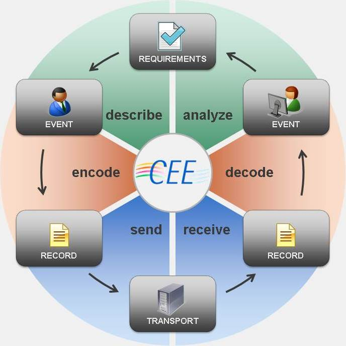
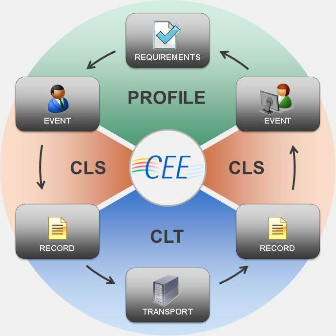

CEE is an open, practical, extensible, and industry-driven event logging specification with the goal of unifying event representation and classification. It's developed as a coordinated industry initiative with participation from end user groups, logging providers, SIEM vendors, independent experts, and U.S. government organizations. Development is facilitated by The MITRE Corporation as part of the Making Security Measurable initiative.
The availability and accuracy of event records is critical to the management of an IT infrastructure. In current practice, where there is no commonly adopted eventing specification like CEE, publishers of event data (i.e., event data producers) individually determine which events are worth recording, which event data is recorded for each event, the vocabulary that is used to represent that data, and the format in which these records are serialized and transmitted.
This inconsistency across log producers places a burden on end users who wish to use these event records for IT analysis and audit compliance (i.e., event data consumers). These users must support millions of different events described using hundreds of different formats. Although log management tools have been developed with adaptors for most of these formats, those tool vendors must spend development time supporting these adapters at the expense of more core capabilities (such as analysis, aggregation, and visualization).
Whether the end user uses a log management tool or not, they pay for these inconsistencies through the increased overhead costs of having to support multiple formats as well as decreased awareness brought about by inconsistent information reported by different tools.
CEE addresses these deficiencies by providing a common vocabulary and syntax that may be used used to record, share, and interpret log data so that the devices and applications writing log data can use a common format. For end users this will lower the cost of log management and make the information provided more consistent and accurate, while for event data producers and consumers it will allow them to focus time on their core product capabilities rather than on defining logging formats and vocabularies.

The process of event collection, dissemination, and analysis can be divided into a six step lifecycle, which CEE calls the event management lifecycle, that enables effective event management:
describe: EVENTS are described based on REQUIREMENTS developed based on compliance mandates, policy, and industry best practices
encode: The EVENT and relevant data is encoded into an RECORD
send: Those RECORDS are sent upstream through the organization for analysis or storage
receive: Consuming devices receive the transmitted RECORDS
decode: The RECORDS are decoded to retrieve the original EVENT information
analyze: The EVENT is analyzed to determine whether they are consistent with identified REQUIREMENTS or indicate issues that require further investigation
CEE defines specifications for key components at every step of the event management lifecycle:

Given the open-endedness of event records, no single event specification can hope to express the full taxonomy and list of fields (field dictionary) for all events in all possible applications. As such, the key data structure that CEE defines is the CEE Profile. A CEE profile isn't a data model for event reporting, it's a data model for describing events that can then be adopted for event reporting. Events themselves are reported through conformance to a particular CEE profile specification.
A CEE Profile contains two key components: a field dictionary and an event taxonomy.
The Field Dictionary is a listing of fields that should be used to represent common event data. For example, a common source of inconsistency among operating systems is whether an IP address is reported using "ip", "ip address", "ip_address", or "ipaddress". The field dictionary specifies a single field name (and associated description) to use for this and other common event fields for the given profile.
The Event Taxonomy is a controlled vocabulary of event tags to enable a consistent classification of event types across different products and organizations. Note that, for most cases, event taxonomy categorizations can be considered fields in the field dictionary with a set of enumerated values.
The profile structure allows product vendors, communities of interest, and regulatory bodies to describe how events of a certain type are (or must be) reported. Profiles are also inheritable, meaning that a more specific profile (HIPAA auditing for web servers) can extend a more general purpose profile (auditing for web servers). Although profiles can be created for any use, CEE informally identifies two primary uses of profiles:
For more information, see the CEE Profile Specification.
The capabilities and efficiency gains of a common event expression, as described in the introduction above, cannot be reached simply by providing a common profile structure. The profile structures need to be developed and common profiles need to be provided across communities of interest so that events of the same type are consistently logged using the same vocabulary and taxonomy (i.e., the same profile).
For example, even if each operating system vendor adopts CEE and develops a CEE Profile to define how they perform logging there would still not be a shared vocabulary and taxonomy. Instead, an operating system community of interest would need to develop a single operating system CEE Profile and then each adopt that same profile. Then, the shared vocabulary and taxonomy defined in that profile would mean that event consumers could rely on the same field names, values, and categorizations to be used for the same events regardless of the source. Essentially, the community would need to adopt a single function profile rather than separate product profiles.
To provide a consistent base for this process, CEE publishes a Core Profile. This is a CEE Profile that describes a very basic field dictionary and taxonomy that should be valuable for very common events across a variety of application types, vendors, and communities. To support this role as the core vocabulary, CEE requires that all other profiles extend either directly or indirectly from the Core Profile. This means that all CEE Profiles by default include the CEE Core Profile.
The Core Profile will accept changes from the community and be versioned separately from the CEE specification itself. This will allow for agile profile development while the core CEE syntax can remain stable.
For more information, see the Core Profile section of the CEE Profile Specification.
The CEE Log Syntax (CLS) specifications define the requirements for encoding and decoding a CEE Event into an event record given an associated CEE Profile. The CLS requirements are designed for maximum interoperability with existing event and interchange standards. To ensure compatibility across supported record syntaxes, CEE provides CEE Log Syntax (CLS) Encodings in JSON and XML. Each CLS Encoding declaration defines a mapping from a CEE Event to a specific record syntax.
While CEE Profile describes an event, CLS describes how to encode that event into an event record:
+---------+ +---------+ encode +--------------+
| | describe | | =======> | |
| Profile | ==========> | Event | | Event Record |
| | | | <======= | |
+---------+ +---------+ decode +--------------+
For more information, please see the CEE Log Syntax Specification.
CEE Log Transport (CLT) provides the technical support necessary for a secure and reliable event management infrastructure. An event and audit infrastructure requires more than just standardized event records: support is needed for international string encodings, secure logging services, standardized event interfaces, and secure, verifiable event trails.
The CLT defines a listing of CLT Protocol Requirements that CEE-compliant event transport protocols must meet in order to support specific logging capabilities. For example, any CLT Protocol must be able to transmit a CLS Encoded CEE Event in one or more encodings. More advanced CLT Protocols, however, may provide things like encryption and reliable delivery.
CLT also defines transport mappings. A CLT Mapping defines a mechanism for CEE Events to be transmitted over a certain CLT Protocol. Currently, the only CLT Mapping provided is for sending JSON-encoded CEE Events over the RFC5425 TLS Syslog protocol. This Mapping defines how the CEE Event can be encoded using an RFC5424 Syslog-compatible CLS Encoding and placed at a certain point in the Syslog message.
For more information, please see the CEE Log Transport Specification.
One common problem in current log management practice is that terms mean different things to different products, organizations, and communities. An IP Address may mean just an IPV4 address to one community while it might mean an IPV6 address to another. It may mean only external addresses to one group and both external and internal to another. Normalizing these terms across communities of interest will allow for a common understanding of terms and support both ease of implementation for log management vendors and easy of use for end users.
Specification Support: CEE supports this use case through the CEE Profile Field Dictionary and Event Taxonomy. Communities can publish common vocabularies to be used for event reporting and then rely on a similar understanding of terms. Additionally, the CEE Core Profile provides a base vocabulary for commonly used terms across all types of event reporting.
The most obvious problem in current log management is the lack of a common syntax for reporting log data. This includes both the data formats used (XML vs. formatted-text in many cases) as well as common header fields (such as event record ID).
Specification Support: CEE supports this requirement through the CEE Log Syntax and associated encodings, which describe mechanisms for reporting events in both JSON and XML using standard header fields and record structures. The support of both XML and JSON is provided to support the varied requirements of this use case, such as whether reliable delivery and event record validation at run time are necessary. JSON provides a simple format that may be used when these are not requirements while XML provides a more complete format for when these are requirements.
Although syslog is a de-facto standard in the log transport space, it is not supported across all common operating systems and has several key technical weaknesses. Transition to a more feature-complete transport is hindered by a lack of suitable substitutes and the implementation cost of changing existing infrastructure.
Specification support: CEE supports this requirement through CEE Log Transport and associated mappings, which describe mechanisms for transporting CLS-encoded event records in syslog as well as providing a mechanism to publish similar mappings for more capable protocols. This provides a common community for developing log transport protocols and a single place to publish mappings for new protocols seeking standardization and adoption. Additionally, usage of CEE provides a bridge between syslog and more capable log transports.
Another common issue is correlating similar event records from different products across a heterogenous IT infrastructure. For example, large enterprises may run both Unix servers and servers by commercial vendors. While that company would wish for all events to be reported consistently across their server installs there are generally differences between products in both which events they report and which information is included in event records.
Specification Support: CEE currently does not fully support this use case. Extensions have been suggest to create an "Event Class" concept, which would allow communities or regulatory bodies to define how events of a specific type must be reported, however the concept has not been fully developed.
The CEE Compatibility Requirements describe the levels of compatibility that products can achieve with CEE. Devices compatible with CEE must be compatible with each specific CEE component that is supported as well as its inter-component dependencies and the applicable, overarching CEE compatibility requirements.
The components with compatibility requirements are:
Products and organizations that conform to these specifications may request inclusion in the CEE Adoption Program. Additionally, validation requirements derived from the specification requirements will be provided and a validation program instated for each of the above specifications.
Normative requirements for each of these components are specified using RFC 2119 language in the specification document.
CEE uses a two-component version identifier (major.minor) to track the evolution of the specification over time. Versioned components of CEE itself are the CEE Profile specification, CLS, CLT, and their appendices. The Core Profile is NOT versioned concurrently with CEE but follows this versioning policy with some of its own refinements.
A major release, denoted by a new major version number, is reserved for adding, removing, or changing features that break backwards compatibility. Minor versions, on the other hand, are released for changes that do not break backwards compatibility.
For example, going from version 1.9 to 2.0 would denote changes that break backwards compatibility while going from 1.0 to 1.1 would not.
In any major or minor release, any item in the versioned components of CEE may be marked as deprecated. This denotes that its usage is strongly discouraged and that it may be removed in a future release. Generally, components are marked for deprecation when they are obsoleted or when for language consistency reasons the community determines that they should be removed.
Any versioned component of CEE must go through a deprecation phase prior to removal. When a component is deprecated a notice will be added to the specification. That notice will specify the component that is deprecated, the reason for the deprecation, and what it is being replaced with (if applicable). Additionally, the community will be notified via e-mail and a notice placed on the CEE website.
Although the CEE Core Profile is versioned separately from the CEE Specifications, the deprecation policy is identical and references this section.
Deprecation Process
Page Last Updated: August 01, 2012